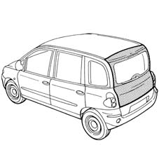
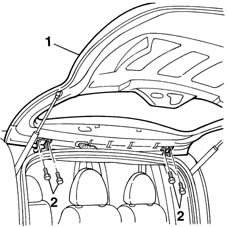
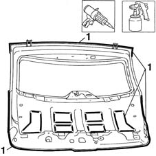

7210E56 TAIL-GATE
- Path
- Procedures > 72 PANELS AND FRAME > 7210 REMOVING REFITTING > 7210E EXTERNAL PARTS > 7210E56 TAIL-GATE
- Kind
- repair procedure (removal / refitting; the operation number is the code)
- Applies to
- all engines; all production periods
- Interactive page
- https://sloeber94.github.io/elrnDB-fMltpl/en/#/2892327
Applies to: all engines; all production periods
 Removing
Removing
 Refitting
RefittingCheck that the components connected are not distorted by checking the bodyshell alignment measurements using suitable equipment (e.g. gauges).
Straighten the body as necessary.
Remove the vehicle tailgate.
Op. 7025A14 L/H OR R/H BONNET LID SUPPORT DAMPER (ONE) - R+R

Applies to: all engines; all production periods
Refitting
RemovingPosition the part on the stand and fit the catch and end stops.
1. Position the part on the vehicle provisionally and secure without tightening the bolts.
Check it is properly adjusted.
2. Remove the tail-gate after unscrewing the bolts indicated.

Applies to: all engines; all production periods
1. Seal the tail-gate in the areas shown in the figure.
Paint the tail-gate (follow the recommended procedure).

Applies to: all engines; all production periods
Refit the tailgate to the vehicle.
Op. 7025A14 L/H OR R/H BONNET LID SUPPORT DAMPER (ONE) - R+R